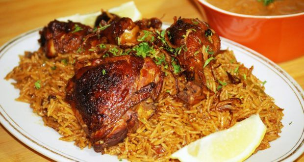

Kabsa Recipe

Description
Chicken kabsa - Turn your next dinner into a feast with this Arabian style chicken and rice. Spiced grilled chicken and flavorful rice makes this the ultimate choice for any special occasion. Channel your inner chef, and cook up a storm for friends and family.
Read more
Ingredients
- 8 cups water or 2 liters.
- 1 kg whole chicken , cut into 8 pieces.
- 4 tablespoons vegetable oil.
- 2 medium potatoes or 500 g, cut into medium cubes.
- 2 medium onions or 250 g, chopped.
- 1/2 teaspoon ground cinnamon.
- 1/2 teaspoon ground cloves.
- 1/2 teaspoon ground cardamom.
Preparations
- Wash all the ingredients with water and salt to take out the dust. Clean the chicken by adding rough sea salt while scratching it to eliminate the grass.
- Cut the potatoes into cubes of medium sizes. Cut the onions in very small sizes to save you time when cooking.
- Cut the three tomatoes in relatively large cubes. Cut two of the green chilies into very small pieces and leave the third for the representation.
- Place the two-pound rice in a big bowl and wash it with cold water by shuffling the rice. Leave the rice aside to absorb the water.
- Cut the chicken in quarters and take out the skin. Add species to the chicken for flavor.
Cooking Instructions
- Turn up heat to medium temperature, add have cup of vegetable oil in a deep large pot. Stir oil till it worms up.
- Add onions cubes into pot and stir fry till they become golden. Add chicken flavored bouillon.
- Place chicken slices into pot and stir frequently until they are half-cooked and place them on a plate to cool down on the side.
- Put potatoes cubes into the pot and add boiling water until potatoes cubes are completely submerged.
- Close the pot with lid and let boil until potatoes are cooked for half an hour.
- Put chicken back into the pot after potatoes are cooked; add tomatoes slices, tomato paste into the pot to be cooked with potatoes.
- Add bay leaf (3) into pot, then add 2 chilies strips into pot.
- Add seasoning (coriander, chills, grounded ginger, 4 cloves).
- Pour grain into pot.
- Add water until rice is submerged at a depth approximately 1 inch.
Bon appetit